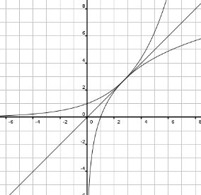

|
Solution: Let \( f(x) = b^x \) and \( g(x) = \log_b x \). Because \( f \) and \( g \) are inverse functions, they are reflections of each other over the line \( y=x \). Also, anywhere \( f \) intersects \( g \) will be at a point on \( y=x \), including the point of tangency. Let \( (c,c) \) be this point of tangency so that \( f(c) = c = g(c) \).  Because the tangent line to each of these functions at the point \( (c,c) \) has a slope of 1, we can get useful information out of their derivatives. $$ f'(x) = b^x \ln b $$ $$ f'(c) = b^c \ln b = 1$$ $$ g'(x) = \dfrac{1}{x \ln b} $$ $$ g'(c) = \dfrac{1}{c \ln b} = 1 $$ From \( g'(c) \) we have: $$ c \ln b = 1 $$ $$ c = \dfrac{1}{\ln b} $$ Then from \( f'(c) \): $$ f'(c) = b^{1/ \ln b} \ln b = 1 $$ $$ \ln(b^{1/ \ln b} \ln b) = \ln 1 $$ $$ \ln(b^{1/ \ln b}) + \ln(\ln b) = 0 $$ $$ (1 / \ln b) \ln b + \ln(\ln b) = 0 $$ $$ 1 + \ln \ln b = 0 $$ $$ \ln \ln b = -1 $$ $$ \ln b = e^{-1} = 1/e $$ $$ b = e^{1/e} $$ Therefore the base b is equal to \( e^{1/e} \). |